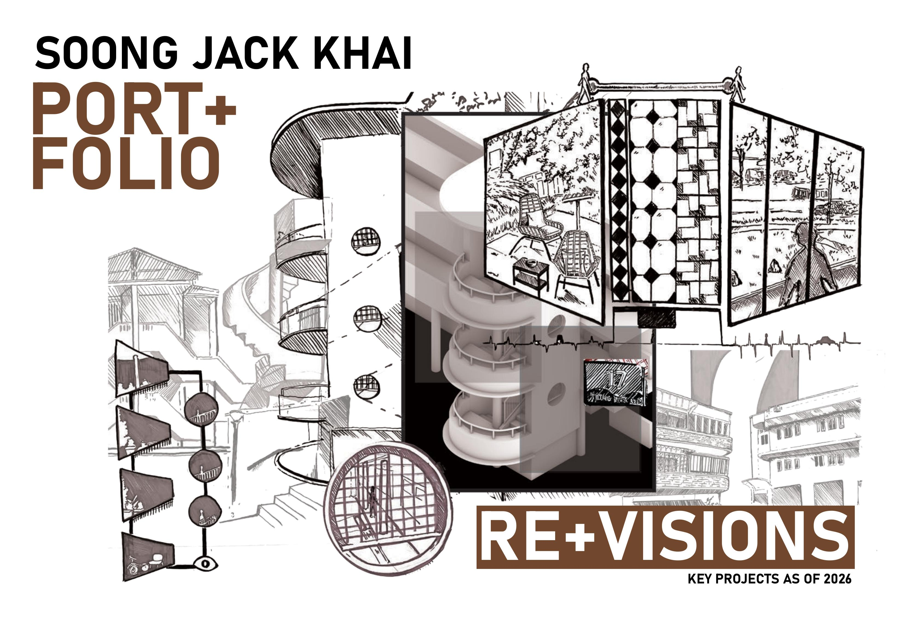
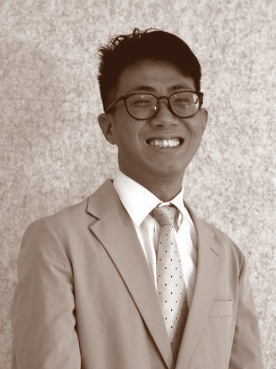
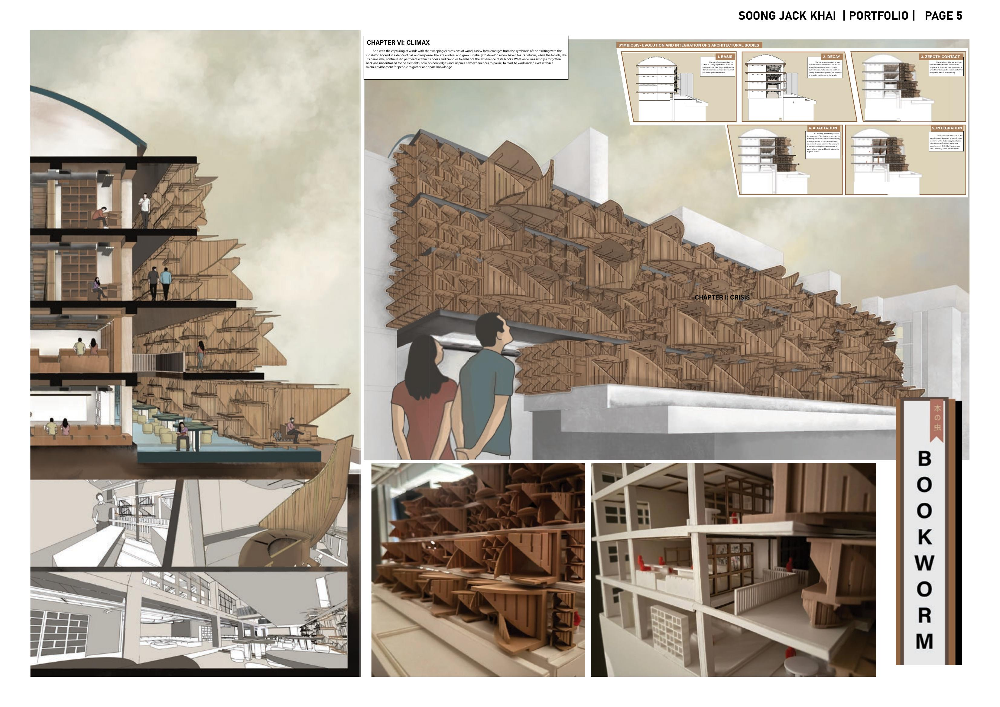
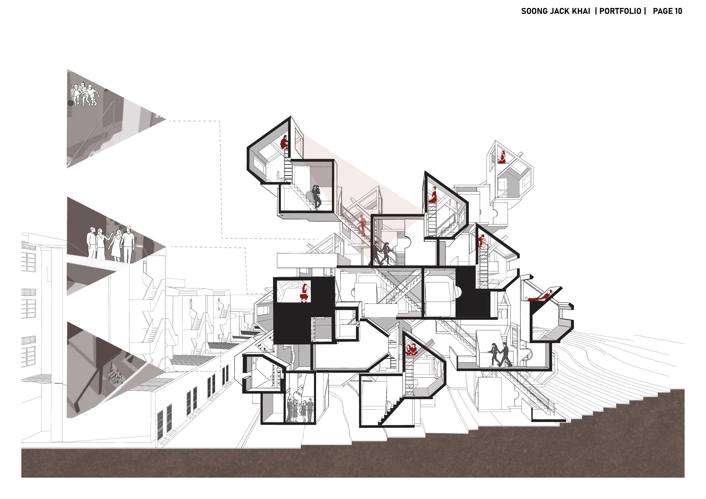
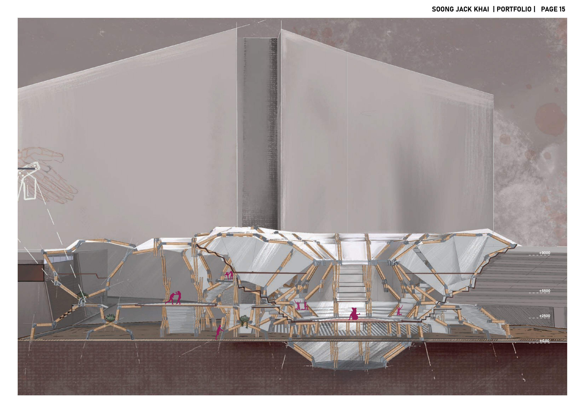
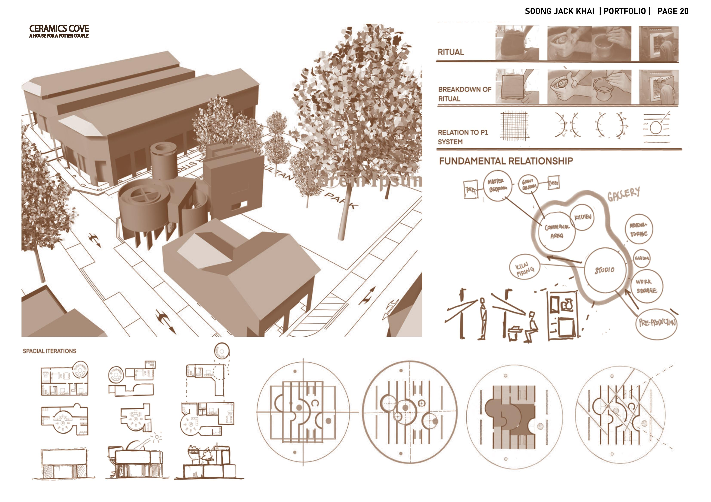
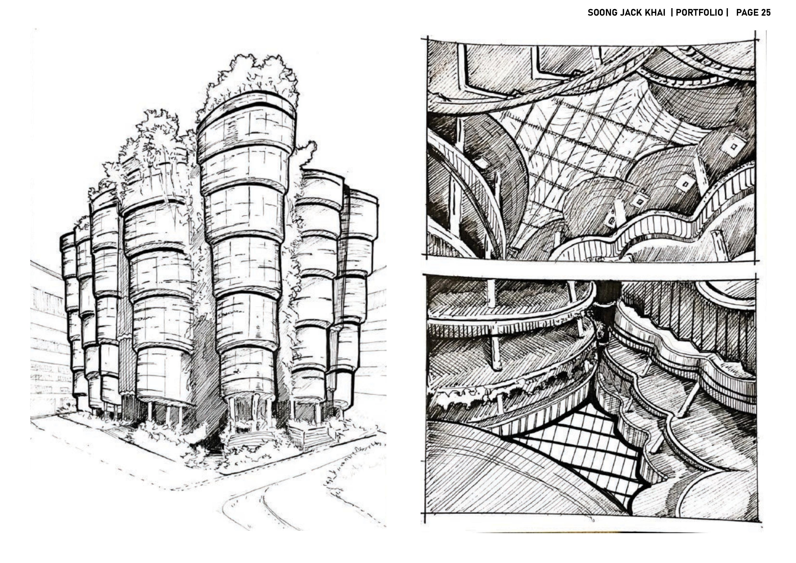
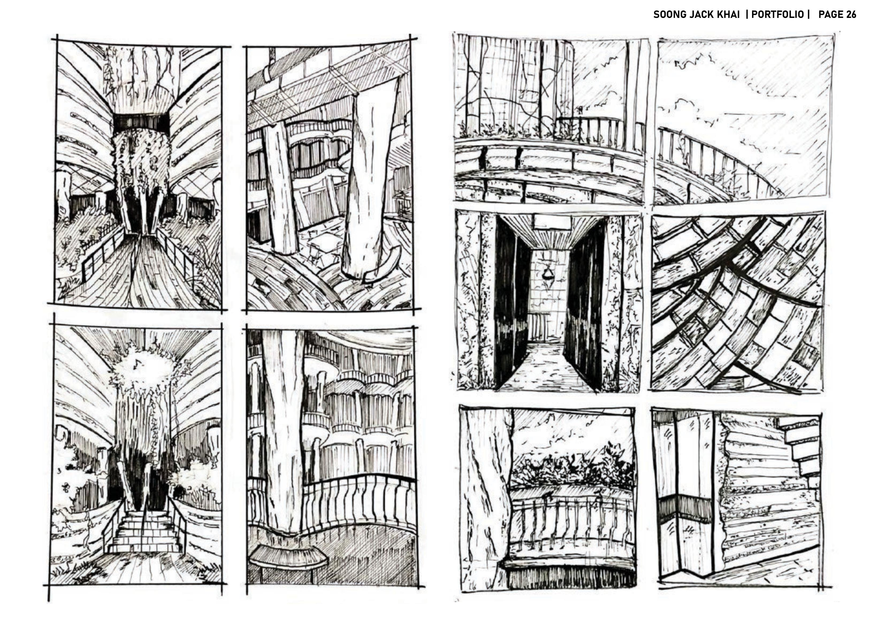
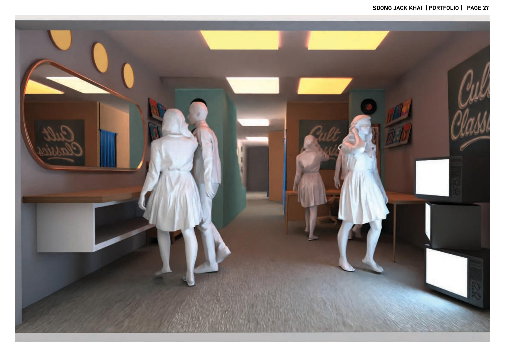
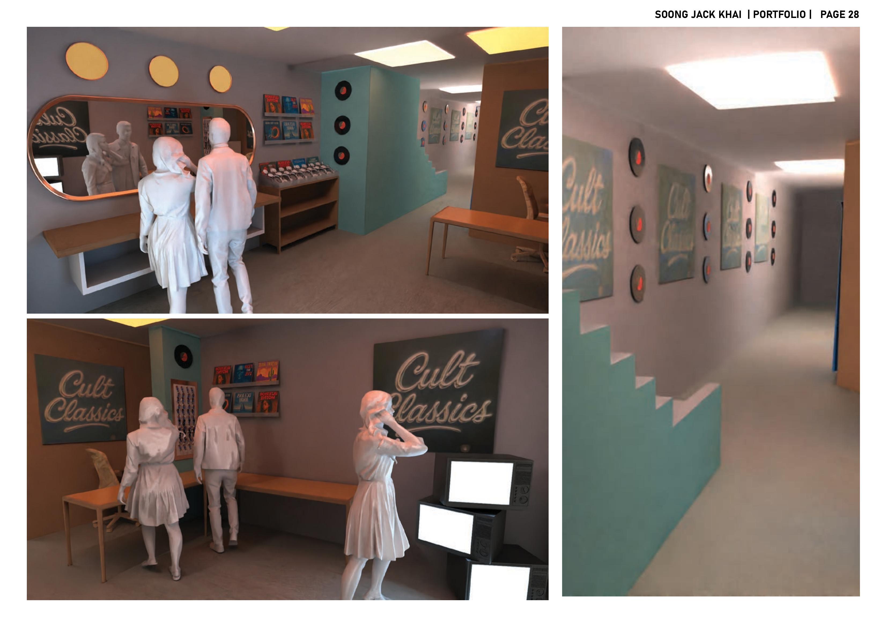

Soong Jack Khai is a Bachelor of Architecture student at the National University of Singapore with a background in art, design, and public speaking. He integrates fine art and hand sketching into his architectural process, exploring how buildings can respond to site, community, and the human body.

"What if a facade could read the climate like a book?"
An adaptive modular winged facade intervention on an existing campus building. The facade performs quiet symbiosis — modulating light, encouraging airflow, and framing communal spaces for reading, learning, and gathering. It reimagines the facade not as a fixed skin, but as a living interface: curious, responsive, and ever-changing.

"What if collective living reflected the paradoxes of community + solidarity?"
A modular aggregation inspired by the duality of Tiong Bahru's exposed central streets and hidden communal back alleys. Operative Art was used as a generative tool to translate this social paradox into an architecture of solitary peaks and hidden communal spaces.

"What if architecture and human anatomy mirror each other in conflict?"
A study of the human body's extremities as architectural generator. An arm-extension prosthetic was used to gather ergonomic data, translating joint dynamics into structural elements expressing separation, surface, and intensity — housing a contact sports programme.

"What if collective living reflected the rituals of making?"
A mixed-use residential building and pottery studio drawing from Van Eyck's principles and the site's ceramics heritage. The architectural form is generated by the rituals of clay-making — how the process of throwing, coiling, and forming informs spatial movement and order.


On-site ink sketch study of The NTU Hive — integrating hand drawing and fine art observation into architectural documentation and analysis.


A photobooth studio interior design proposal in Kuala Lumpur — exploring light, materiality, and intimate spatial experience through fine art and design thinking.